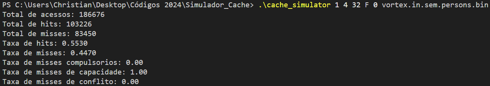
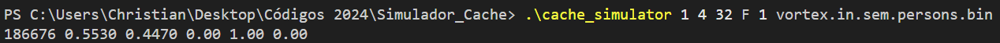

Descrição Teórica
Este trabalho trata-se de um simulador de cache escrito na linguagem C.
Cache é uma memória de alta velocidade que armazena uma cópia dos dados mais frequentemente
utilizados.
A cache é utilizada para reduzir o tempo de acesso à memória principal, que é mais lenta, e
assim melhorar o desempenho do sistema.
Este simulador de cache é capaz de simular caches com diferentes configurações, como número de conjuntos, tamanho do bloco, associatividade e política de substituição.
Além disso, o simulador é capaz de ler um arquivo de entrada contendo os endereços de memória acessados pelo processador e simular o acesso à cache.
Os endereços de memória são processados e verificados se estão presentes na cache, caso não estejam, é feito um miss na cache e o bloco é substituído de acordo com a política de substituição informada.
Os resultados da simulação são exibidos na saída padrão, contendo informações sobre os acessos à cache, como acertos, faltas e taxa de acerto.
Os parâmetros de configuração devem ser passados como argumentos na linha de comando, e o arquivo de entrada deve ser passado como último argumento.
Foram realizadas como bônus do trabalho políticas de substituições extras.
Os parâmetros de configuração da cache são:
nsets: Número de conjuntos da cachebsize: Tamanho do bloco da cacheassoc: Associatividade da cachesubstituição: Política de substituição da cacheflag_saida: Flag para exibir saída detalhada
Os algoritmos de substituição disponíveis são:
LRU: Troca o bloco utilizado a mais tempo (Last Recent Used)FIFO: Troca o bloco inserido primeiro, conforme uma fila (First In First Out)RANDOM: Este algoritmo é aleatório, e troca de forma aleatória o bloco, podendo alterar a cada execução
Os arquivos de entrada devem ser binários, e contém os endereços de memória acessados pelo
processador.
Os Flags de saída contém as informações sobre os acessos à cache, como acertos, faltas e
taxa de acerto.
Sendo a Flag 0 no formato mais amigável ao olhar e a Flag 1 a utilizada nos testes do
professor
Estrutura do Projeto
cache.h: Contém as definições de structs e declarações de funções.cache.c: Implementação das funções relacionadas à cache.cache_simulator.c: Código principal que executa o simulador (é nosso main).Makefile: Um arquivo opcional para facilitar a compilação do projeto.CacheSet: Estrutura que representa a cache. Possui o número de blocos e um ponteiro para um bloco da cache.CacheBlock: Estrutura que representa um bloco da cache. Possui tag, validade e os valores utilizados nos algoritmos de substituição.Cache: Estrutura que representa a cache. Possui o número de conjuntos, o tamanho do bloco, a associatividade, a política de substituição e um ponteiro para um conjunto da cache.CacheSimulator: Estrutura que representa o simulador de cache. Possui a cache e as estatísticas de acesso à cache.createCacheWithPolicy: Inicializa a cache com os parâmetros informados e define a política de substituição.freeCache: Libera a memória alocada para a cache.readFile: Lê o arquivo e gera o endereço no formato big-endian.processAddress: Processa o endereço formatando tag e indice, verifica se é hit e redireciona para o tratamento caso não seja.isHit: Testa a tag e validade, caso sejam iguais, retorna true(hit), e false caso contrário(miss). Atualiza o bloco na cache caso seja hit.handleCacheMiss: Trata o miss na cache, utilizando a política de substituição informada. Usa o pseudo-código para definir o tipo do miss.getLRUIndex: Implementa a política de substituição LRU retornando o índice com base na posição utilizada a mais tempo.getFIFOIndex: Implementa a política de substituição FIFO retornando o índice com base na posição inserida primeiro.getRandomIndex: Implementa a política de substituição RANDOM retornando o índice de forma aleatória, podendo dar resultados diferentes a cada execução.printStats: Imprime as estatísticas da cache com base na flag (0 ou 1).isPowerTwo: Testa se o valor passado é potencia de dois.cacheIsFull: Testa se a cache está cheia, retornando true caso esteja cheia e false caso contrário.
Detalhes do código
Structs
Funções
Compilação
Para compilar o projeto, utilize o seguinte comando no terminal:
gcc -o cache_simulator cache_simulator.c cache.c -lm
Caso seja usado o Makefile simplesmente rodar o comando:
make
Execução
Para executar o código no Linux use algo deste tipo:
./cache_simulator <nsets> <bsize> <assoc> <substituição> <flag_saida> arquivo_de_entrada
Para executar o código no Windows use algo assim:
.\cache_simulator <nsets> <bsize> <assoc> <substituição> <flag_saida> arquivo_de_entrada
Exemplo de saída flag 0:
Exemplo de saída flag 1:
Resultados
Os resultados obtidos com o simulador de cache foram satisfatórios, e os testes realizados com
diferentes configurações de cache e arquivos de entrada foram bem sucedidos.
As saídas obtidas foram comparadas com os exemplos disponibilizados, e com exceção dos resultados
usando RANDOM, que podem variar a cada execução, todos os outros resultados foram idênticos.
Autores
Gerado por